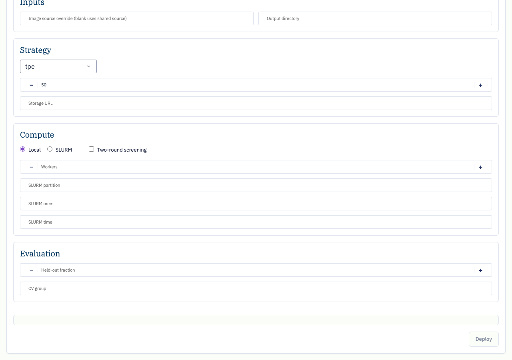
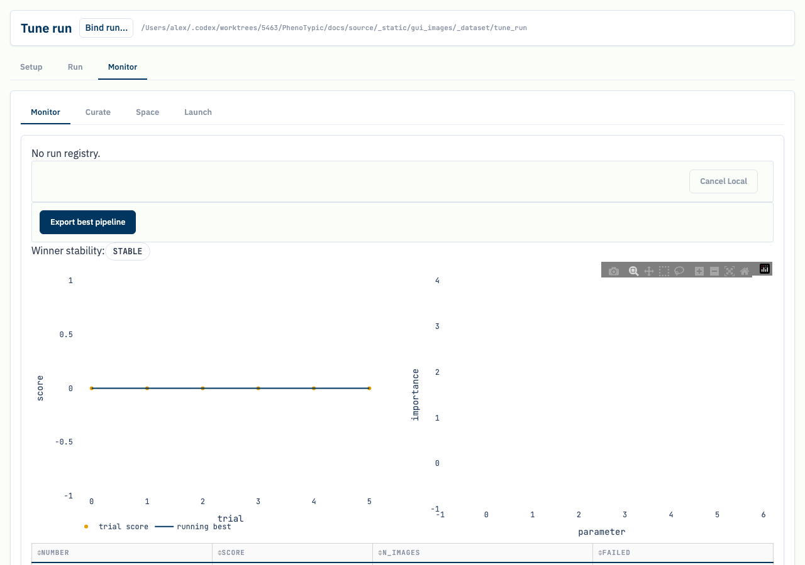
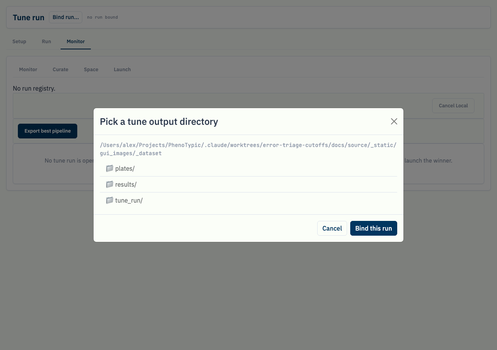
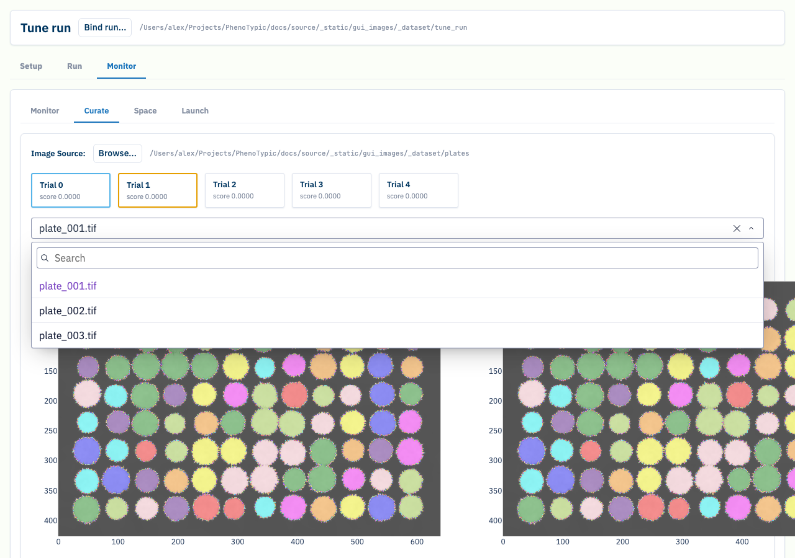
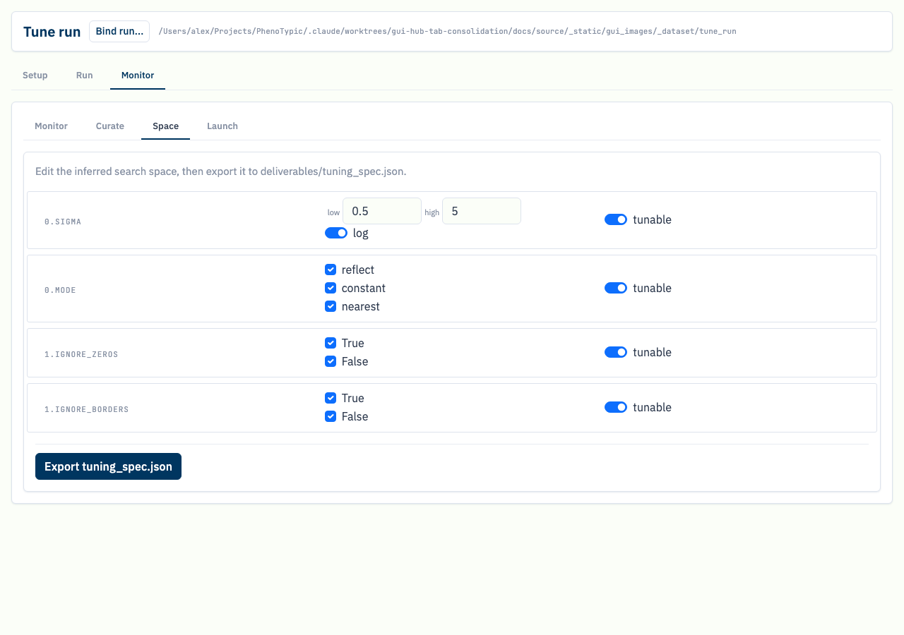
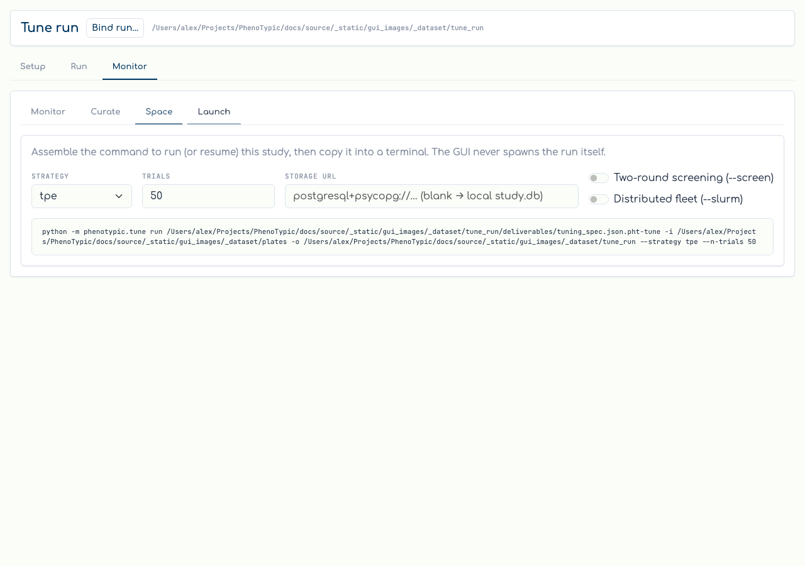

Tune co-pilot#
The Tune tab is a full author → run → monitor co-pilot for
hyperparameter tuning. From it you author a tuning spec over a base
pipeline, launch the search (locally or on SLURM) straight from the
browser, then watch the study, compare candidate pipelines on real
plates, and export the winner. The page is organised as three top-level
destinations — selected from the destination row at the top — with the
classic four-view co-pilot living inside Monitor:
Setup — author a tuning spec: pick a base pipeline (or an existing spec) and a metadata layout for the default count scorer, review the inferred search space, and Continue.
Run — configure the launch (image source, output dir, strategy, budget, storage, compute, evaluation) and Deploy the run. A live command card mirrors the form into the real
python -m phenotypic.tune runinvocation.Monitor — the live read over the study. Switch among registered Local/SLURM runs, cancel a Local run, export the best pipeline, and use the four sub-tabs: Monitor (objective + importance figures, gap badge, trials table), Curate (A/B colony overlays), Space (search-space inference + export), and Launch (render the
runcommand).
This is no longer read-only
Earlier versions of the co-pilot only read a finished tuning run and made you copy a command out to a terminal. The current co-pilot authors specs in Setup and launches them with Deploy in Run — the GUI starts the local runner or submits the SLURM fleet for you. Binding an existing run (below) is still strictly read-only.
Prerequisites#
A base pipeline (or tuning spec) JSON reachable inside the GUI sandbox (the
--rootyou launchedphenotypic-guiwith), e.g. one exported from the pipeline builder.A metadata layout CSV/Parquet inside the sandbox for the default
QCScorer— one row per colony with the grouping column (e.g.Metadata_ImageName) so the count scorer has a path-backed source that round-trips into the spec.For the Curate overlays and (when monitoring an existing run) the run itself, the calibration image directory must be reachable inside the sandbox. A previously produced tune output is recognised by its
.pht-tune-cache/run.jsonmarker (written at run start, before any deliverable lands), so both in-flight and finished runs resolve.
Run — configure and launch#
The Run destination (unlocked once a pipeline is chosen) is the launch
form. A live command card under the form mirrors every field into the real
python -m phenotypic.tune run invocation — the same subcommand and flag
names you would type by hand — so what you Deploy is exactly what you would
run in a terminal:

The form is grouped:
Inputs — an in-sandbox image-source override (blank falls back to the shared source root) and the output directory.
Strategy — the strategy (
grid/random/tpe/cmaes/gp/nsga2), trial budget, and Optuna storage URL.Compute — Local vs. SLURM, the two-round screening toggle, and the SLURM fleet sizing fields (workers, partition, memory, time).
Evaluation — held-out fraction and CV-group overrides.
A pre-flight gate disables Deploy when the configuration cannot run —
for example a grid search over a continuous FloatRange. Pressing
Deploy registers the run in the shared run registry and starts it
through the local runner (or submits the SLURM fleet) and switches you to
Monitor. The GUI records the run’s mode and status; it does not parse
or track a SLURM job id.
Monitor — watch the study#
The Monitor destination opens the live read over the study. A
run-switcher lists every registered Local/SLURM run; the active run drives
the figures. A Local run shows its stdout tail and a Cancel Local
button (wrapped in a confirm prompt); SLURM runs show fleet status and are
not killed from the GUI in v1. The objective curve plots the raw per-trial
scores plus the monotone running-best trace, the importance bars rank the
tuned parameters, the winner-stability badge flags a high-dispersion
winner, and the trials table lists every trial. A 3-second poll keeps all
four live while a run is in flight; if the live study store is unreachable
the Monitor degrades to the finished trials.parquet journal and surfaces
a note rather than blanking. Export best pipeline writes the run’s
winner from deliverables/best_params.json:

Binding an existing run (read-only)#
You do not have to deploy from the GUI to monitor a run. Use Bind run
in the page header to open a sandbox-bounded directory picker (the same
security boundary the builder / run-console pickers enforce) and point it
at any python -m phenotypic.tune output directory:

Binding only reads the directory — it runs TuneRunRoot.discover over
the run’s markers and, on success, swaps in the loaded views. A directory
that is not a tune output (no .pht-tune-cache/run.json,
tuning_spec.json, or trials.parquet) — or one outside the sandbox — is
refused with a clear note, never a crash. A live run resolves from its
run.json marker before any deliverable lands, so an in-flight run shows
on Monitor immediately.
Curate — compare candidates on real plates#
Switch to the Curate sub-tab. The shortlist surfaces the top trials
(plus any the gap badge flagged). Click a card to pin it into slot A, a
second to pin B, then pick a plate — the two go.Image overlays render
each trial’s pipeline applied to that plate so you can read the detection
difference directly. Panning or zooming one overlay mirrors the other
(linked pan/zoom); the Difference toggle collapses the pair into a
single image that paints both / only-A / only-B objects. Set as winner
writes the pinned trial’s pipeline to best_pipeline.json:

Space — review and edit the search space#
Space infers the search space from the bound run’s pipeline / spec and
renders one knob-row per tuned target. Flat and presence knobs are editable
— a range knob shows low / high / log inputs, a categorical knob shows a
choice checklist — while nested knobs render read-only. Toggle a knob’s
tunable switch to include or drop it, then Export tuning_spec.json to
write the edited space back (the scorer is preserved):

Launch — render the next command#
Finally, Launch turns the next run into a copy-pasteable command. Set
the strategy, trial budget, storage URL, and the --screen / --slurm
toggles; the live command card mirrors the form into a real
python -m phenotypic.tune run invocation using the actual CLI subcommand
and flag names. (This sub-tab is the read-only twin of the Run
destination’s Deploy — use it when you would rather launch from a
terminal.)

Common gotchas#
Setup needs a metadata layout. The default
QCScorerscores detected vs. expected colony counts, so Setup blocks Continue until a path-backed metadata layout is supplied — a spec with an unavailable scorer would not be launchable.Run unlocks only after a pipeline is chosen. The Run destination button is inert until Setup has a pipeline path; the pre-flight gate then blocks Deploy for impossible configurations (e.g. a
gridover a continuous range).SLURM runs are submit-and-watch. The GUI submits the fleet and reaps the submitter (a clean exit moves the run from
submittingtorunning), but it does not store a job id or runscancel; only Local runs are cancellable from the GUI in v1.Binding a run is read-only. The run picker validates the markers and never writes to the run dir; the import surface stays optuna-free and the live study is opened lazily inside the Monitor poll only.
Curate overlays need the image directory in the sandbox. Plate loads are re-confined to the GUI sandbox; an out-of-sandbox Image Source is refused with a toast. Re-point it with the Image Source picker if the marker’s
images_diris not reachable.The Pareto card is multi-objective only. A single-objective run hides it; a run whose scorer declares more than one direction shows the Pareto front card on Monitor.
Where to next#
Build a Pipeline — author the base pipeline a tune run searches over.
Run Locally — run the winning
best_pipeline.jsonthe co-pilot wrote over your full dataset.Analysis — once the pipeline is tuned, compose filters + an endpoint model and emit
analysis.{csv,parquet}.Hyperparameter Tuning — the Python/CLI side of the same engine, including the four scoring objectives.